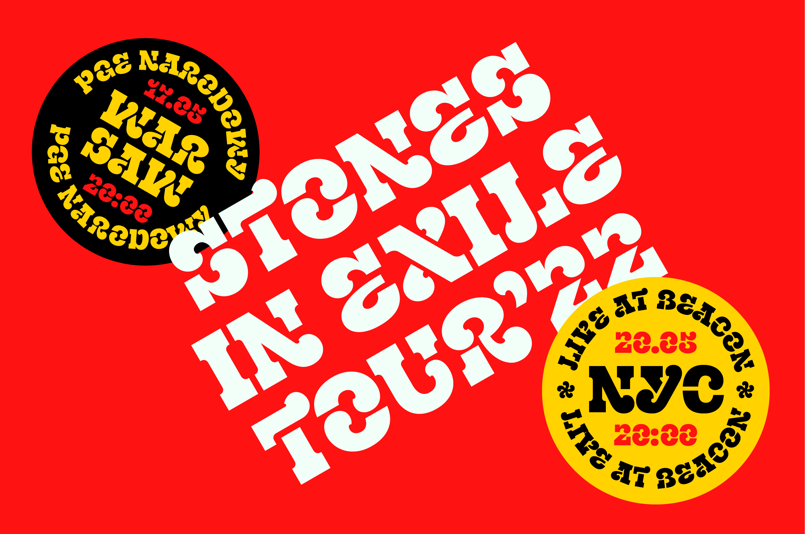
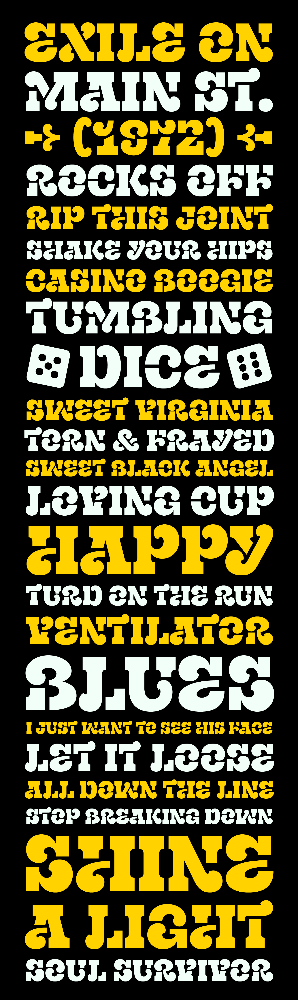
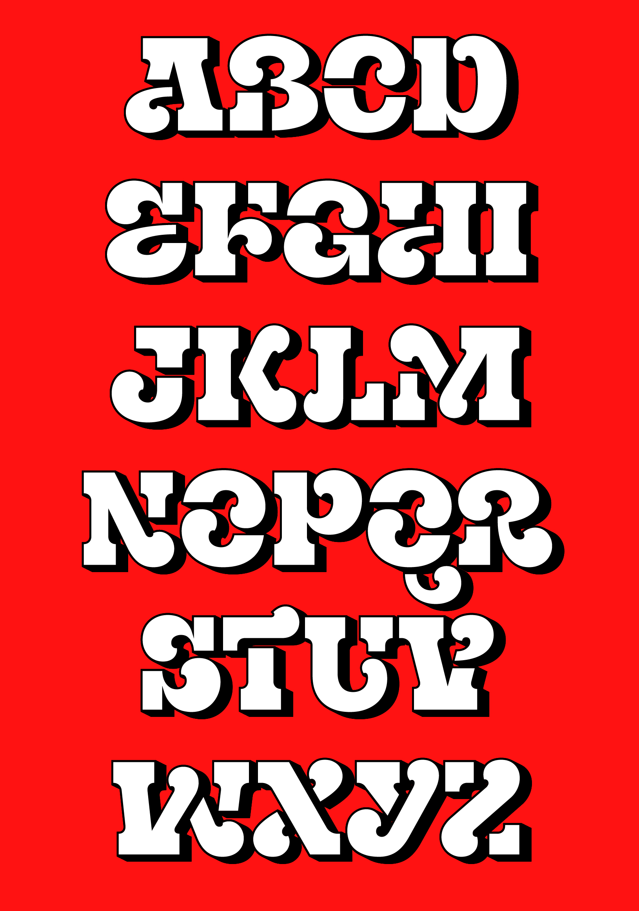
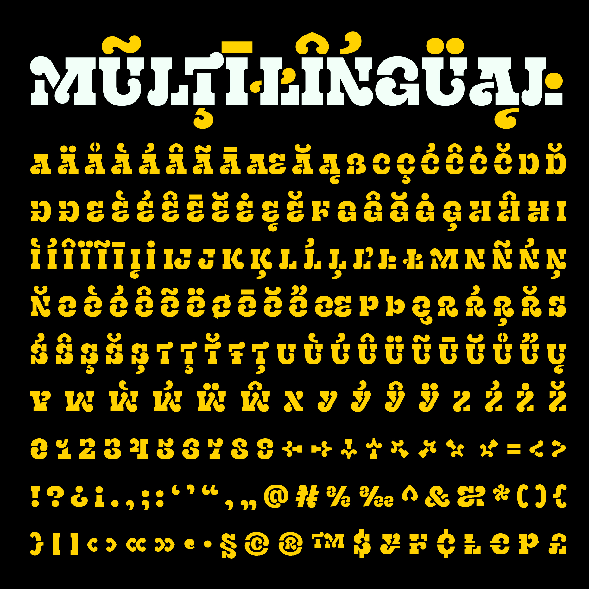

Exile is a display stencil font inspired by music and iconic logo of The Rolling Stones.
The author saw it as a great challenge to design custom fonts for bands as a personal project. Their idea was to create a stencil typeface due to its practicality. It needed to be bold and loud, without compromising on design &emdash; making an all-caps approach essential. The contrast between swashy, soft, tongue-like elements and sharp, heavy slab serifs gave it the unique look the author envisioned. Its name was inspired by one of the author’s favorite Rolling Stones albums, Exile on Main St.
To contribute, please see github.com/rozgatype/Exile.



